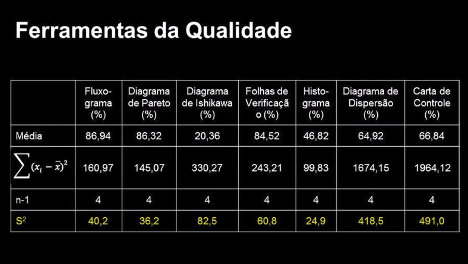

Disciplinas
-
Estatística e Probabilidade Concluído
Materiais
- (Vídeo 2) - Estatística - Aula 16 - Exercícios medidas de posição e dispersão
-
Professor ministrante: André Fleury (Univesp)
Conteúdo
Exercícios medidas de posição e dispersão
Pesquisa de Inovação - PINTECEstatística Descritiva
- 1. Definição do problema.
- Compreensão do contexto em análise (contexto, geração, difusão e incorporação).
- Identificação dos principais parâmetros de interesse.
- Características das empresas.
- Produtos novos ou substancialmente aprimorados.
- Processos novos ou substancialmente aprimorados.
- Atividades inovativas.
- Impacto das inovações.
- Problemas e obstáculos à inovação.
- Uso de biotecnologia e nanotecnologia.
- Formulação correta do problema.
- Ampliar o conhecimento sobre a inovação nas organizações para subsidiar as políticas públicas e estratégicas corporativas.
- 2. Planejamento da pesquisa.
- Quais dados devem ser obtidos.
- Inovação de produto e/ou processo: novo para a empresa mas existente no mercado nacional; novo para o mercado nacional mas existente no mercado internacional; novo para o mercado internacional.
- Atividades Inovativas: P&D interno, P&D externo, aquisição de conhecimentos, de software, de máquinas, treinamento.
- Como estes dados serão obtidos.
- Treinamento de 8 supervisores e 80 agentes de pesquisa.
- Identificação do informante profissional da empresa capaz de responder à pesquisa.
- Entrevistas telefônicas assistidas conduzidas por agentes de pesquisa.
- Sistema CATI - Computer Assisted Telephone Interview.
- Qual tipo de levantamento será realizado.
- População alvo: empresas com atividades inovativas.
- Três Estratos:
- Cadastradas (CEMPRE - censitário) - certo
- Prováveis (bancos de patentes, cadastro FINEP, ...) - forte potencial de inovação.
- Unidade da Federação : >1%PIB
- Qual o cronograma de atividades.
- Qual o cronograma da pesquisa.
- Cronograma: realização em 2011 e publicação em 2013.
- Custo: reduzido com utilização de telefone, que também viabilizou mais agilidade, qualidade e flexibilidade.
- 3. Coleta dos dados.
- 4. Apuração dos dados.
- 5. Apresentação dos dados.
- 6. Análise e interpretação dos resultados obtidos.
- Serviços de tecnologia de informação inovam mais em produtos e processos.
- Metalurgia inova mais em processos produtivos.
- Fabricação de máquinas e equipamentos inova em produtos.
Parâmetro e Decisões
- a. Média.
- b. Variância.
- c. Moda.
- d. Mediana.
Conjunto de Dados
| Amostra A | Amostra B | 76 | 64 | 46 | 70 | 71 | 73 | 51 | 55 | 68 | 53 | 82 | 63 | 77 | 60 | 80 | 60 | 46 | 61 | 39 | 71 | 73 | 66 | 54 | 61 | 54 | 56 | 74 | 68 | 76 | 58 | 82 | 49 | 58 | 64 | 83 | 67 |
|---|
Parâmetros e Decisões
- 1. Mercado Financeiro.
- Melhor Parâmetro: Média.
Qual o melhor parâmetro para decisão?
x̄ᴬ = ∑ᴺxₐᵢ/nₐ = 1190/18 = 66,11
ᴵ⁼¹
x̄ᴮ = ∑ᴺxᴮᵢ/nᴮ = 1109/18 = 61,61
ᴵ⁼¹
Qual o melhor parâmetro para decisão?
- Melhor Parâmetro: Variância.
S²(xₐ) = (∑ᴺ(xₐᵢ-x̄ₐ)²)/nₐ-1 = 3565,78/17 = 209,75
ᴵ⁼¹
S²(xᴮ) = (∑ᴺxᴮᵢ-x̄ᴮ)²/nᴮ-1 = 650,28/17 = 38,25
ᴵ⁼¹
Qual o melhor parâmetro para decisão?
- Melhor Parâmetro: Moda.
- Moda (A): 68.
- Moda (B): 49.
- São os valores que aparecem mais vezes.
x̄ᴬ = ∑ᴺxₐᵢ/nₐ = 1190/18 = 66,11
ᴵ⁼¹
x̄ᴮ = ∑ᴺxᴮᵢ/nᴮ = 1109/18 = 61,61
ᴵ⁼¹
Qual o melhor parâmetro para decisão?
- Melhor Parâmetro: Mediana.
mdₐ = (68+71)/2 = 69,5
mdᴮ = (60+61)/2 = 60,5
Exercício Comentado 3
Ferramentas da Qualidade.
- Técnicas para definir, mensurar, analisar e propor soluções para problemas nos processos das organizações.
- 1. Fluxograma.
- Início -> Operação 1 -> Decisão 1 -> Operação 2 -> Operação 3 -> Fim
- 2. Diagrama de Ishikawa (espinha de peixe).
Problema: Baixa produtividade
Causas principais:
* Mão de obra:
* Falta de treinamento
* Baixa motivação
* Alta rotatividade
* Máquinas:
* Equipamentos antigos
* Falta de manutenção
* Defeitos frequentes
* Materiais:
* Baixa qualidade
* Atraso nas entregas
* Estoque insuficiente
* Métodos:
* Processos ineficientes
* Falta de padronização
* Controle de qualidade deficiente
- Crie uma tabela com colunas para:
- * Data/hora
- * Ocorrência
- * Descrição
- * Localização
- * Responsável
- * Ação corretiva
- Registre as informações relevantes sobre cada problema.
Data/hora | Ocorrência | Descrição | Localização | Responsável | Ação corretiva
--------- | ---------- | --------- | ----------- | ----------- | --------
2023-11-14| 10:00 | Produto com defeito| Linha de produção 1| Operador A | Substituir o produto
2023-11-14| 12:00 | Atraso na entrega | Fornecedor X | Contatar o fornecedor e solicitar agilização |
2023-11-15| 14:00 | Erro no processo | Departamento Y | Revisar o procedimento e treinar os colaboradores|
Problema | Frequência | Porcentagem
------- | ---------- | --------
Problema A | 80 | 80%
Problema B | 15 | 95%
Problema C | 5 | 100%
Classe | Frequência
-------| --------
0-10 | 5
11-20 | 10
21-30 | 15
31-40 | 5
Variável X | Variável Y
------- | --------
1 | 2
3 | 4
5 | 6
7 | 8
Data | Valor | Limite superior | Limite inferior
------- | ----- | -------- | --------
2023-11-01 | 10 | 12 | 8
2023-11-02 | 11 | 12 | 8
2023-11-03 | 13 | 12 | 8
20
| Fluxograma (%) | Diagrama de Pareto (%) | Diagrama de Ishikawa (%) | Folhas de Verificação (%) | Histograma (%) | Diagrama de Dispersão (%) | Carta de Controle (%) | Alimentos | 86,5 | 80,2 | 18,1 | 78,1 | 40,5 | 56,9 | 43,5 | Têxtil | 82,8 | 81,9 | 14,9 | 82,7 | 45,3 | 67,4 | 87,5 | Químico | 86,3 | 92,7 | 27,5 | 81,8 | 53,6 | 78,3 | 90,1 | Mecânico | 97,6 | 92,8 | 9,6 | 98,1 | 45,0 | 87,4 | 67,5 | Constr.Civil | 81,5 | 84,0 | 31,7 | 81,9 | 49,7 | 34,6 | 45,6 | Média | 86,94 | 86,32 | 20,36 | 84,52 | 46,82 | 64,92 | 66,84 |
|---|
Qual a variância?
Variância Amostral:
Amostra S² = ∑ᴺ(xᵢ-x̄)²/n-1
ᴵ⁼¹
